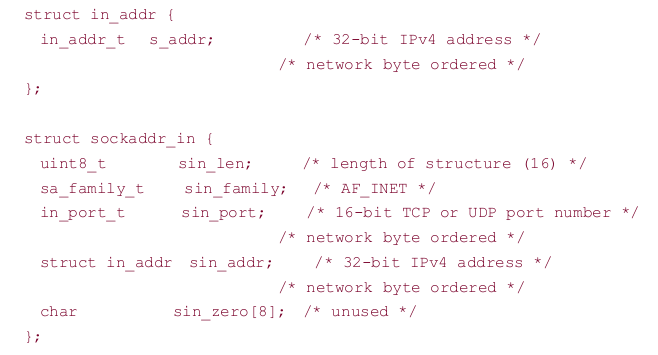
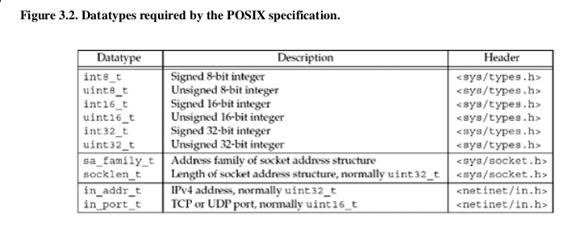
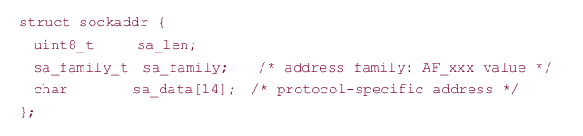
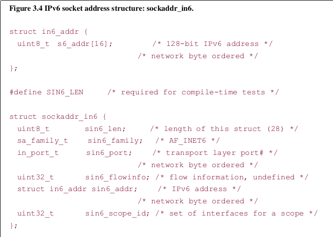
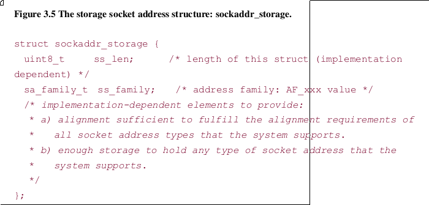
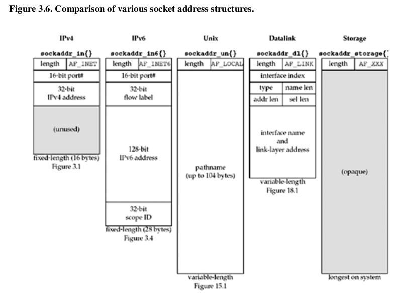
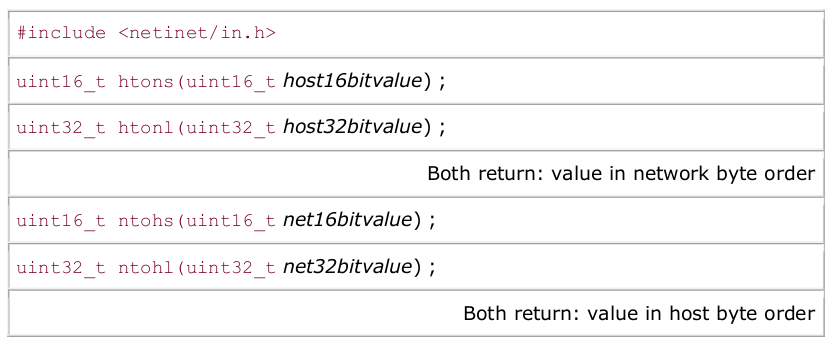
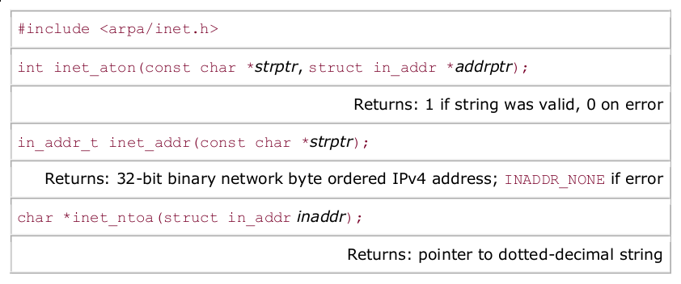
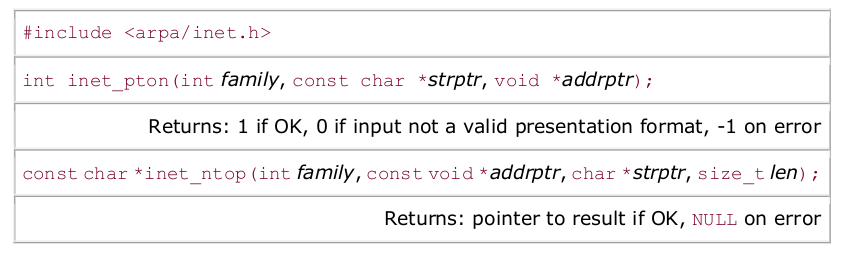
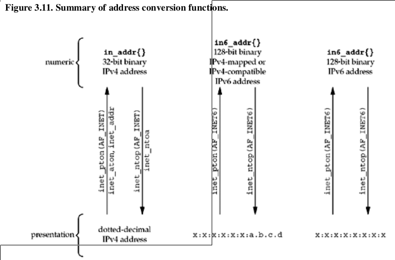

IPv4 Socket Address Structure

Datatypes required by the POSIX specification

Generic Socket Address Structure

IPv6 Socket Address Structure

New Generic Socket Address Structure

Comparison of various socket address structures.

Byte Ordering Functions

Convert Addresses Between ASCII Strings And Network Byte Ordered Binary Values
Old Functions:

note 1: INADDR_NONE is typically 32 one-bits, so inet_addr cannot convert string 255.255.255.255
note 2: inet_ntoa's return value is in static memory, so it is not reentrant
note 3: inet_ntoa takes structures as it's argument, not a point
New Functions:

#define INET_ADDRSTRLEN 16 /* for IPv4 dotted-decimal */
#define INET6_ADDRSTRLEN 46 /* for IPv6 hex string */
Summary of address conversion functions

Exercises
3.1 In C the function can modify arguments only if arguments passed by reference.
3.2 because sizeof(char) is one byte, read or write n chars equals n bytes data.
3.3
/*inet_pton_loose
* author: junfeng*/
#include <stdio.h>
#include <string.h>
#include <netinet/in.h>
#include <arpa/inet.h>
int inet_pton_loose(int family, const char *strptr, void *addrptr);
int main(int argc, char *argv[])
{
/*test*/
struct in_addr a_in4_addr;
struct in6_addr a_in6_addr;
char str_addr4[INET_ADDRSTRLEN], str_addr6[INET6_ADDRSTRLEN];
if (argc != 2)
{
printf("Usage:\n%s str_addr\n", argv[0]);
return 1;
}
if (inet_pton_loose(AF_INET, argv[1], &a_in4_addr) > 0){
inet_ntop(AF_INET, &a_in4_addr, str_addr4, INET_ADDRSTRLEN);
printf("a_in4_addr: %s\n", str_addr4);
}
if (inet_pton_loose(AF_INET6, argv[1], &a_in6_addr) > 0){
inet_ntop(AF_INET6, &a_in6_addr, str_addr6, INET6_ADDRSTRLEN);
printf("a_in6_addr: %s\n", str_addr6);
}
return 0;
}
int inet_pton_loose(int family, const char *strptr, void *addrptr)
{
int ret;
if ( (ret = inet_pton(family, strptr, addrptr)) > 0)
return ret;
if (ret == 0)
{
struct in_addr in_val;
if(inet_aton(strptr, &in_val))
{
if (family == AF_INET)
{
memcpy(addrptr, &in_val, sizeof(struct in_addr));
return 1;
}
if (family == AF_INET6)
{
size_t diff = sizeof(struct in6_addr) - sizeof(struct in_addr);
memset(addrptr, 0, diff);
memset(addrptr + diff - 2,\
0xff, 2);
memcpy(addrptr + diff, &in_val, sizeof(struct in_addr));
return 1;
}
}
return 0;
}
return ret;
}